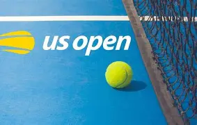
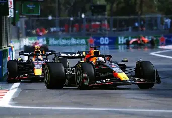
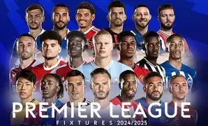
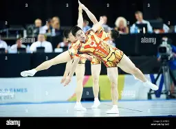
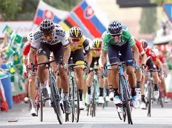
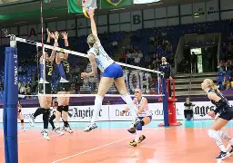
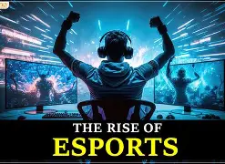
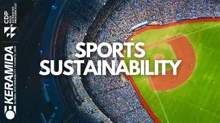

WEEKLY SPORTS HIGHLIGHT
US Open (Tennis)
Details
Date: August 24 – September 7, 2025
Location: Flushing Meadows, New York, USA
Formula 1: Hungarian and Dutch Grand Prix
Details:
Hungarian Grand PrixAugust 1–3, 2025, Hungaroring, Budapest, Hungary
Dutch Grand PrixAugust 29–31, 2025, Circuit Zandvoort, Netherlands
English Premier League Season Kickoff (Football)
Details
Date August 16, 2025
Location: Various stadiums across the UK
The World Games (Multi-Sport)
Details:
August 7–17, 2025
Date: Chengdu, China
Location:
La Vuelta (Road Cycling)
Details:
Date: August 23 – September 14, 2025
Location: Spain (multi-stage race)
Volleyball Women’s World Championship

Date: August 22 – September 7, 2025
Location: Thailand
Emerging Trends

Rise of Esports
Esports continues to gain momentum, with games like League of Legends, Fortnite, and Valorant drawing millions of viewers. Athletes like Ninja and Shroud are becoming household names, and increased sponsorships and media coverage are elevating esports to a mainstream sport. The upcoming Gamescom 2025 Opening Night Live (August 19, Cologne, Germany) is generating buzz for potential esports-related announcements.

AI and Data Analytics
The use of artificial intelligence and data analytics is transforming sports performance tracking. In 2025, teams and athletes are leveraging AI to optimize training, strategy, and recovery, particularly in sports like football, basketball, and tennis. This trend is reshaping how athletes prepare and compete.
Focus on Young Talent
Emerging athletes are dominating headlines. In football, players like Jude Bellingham (England) and Giovanni Reyna (USA) are expected to shine, while in tennis, Carlos Alcaraz and Emma Raducanu are poised for significant achievements. In track and field, Noah Lyles and Christian Coleman (USA) are set to deliver thrilling races

Sustainability in Sports
Sustainable practices, such as eco-friendly stadiums and events, are gaining traction. This trend is evident in the planning of major events like the US Open and The World Games, where organizers are prioritizing environmental considerations.